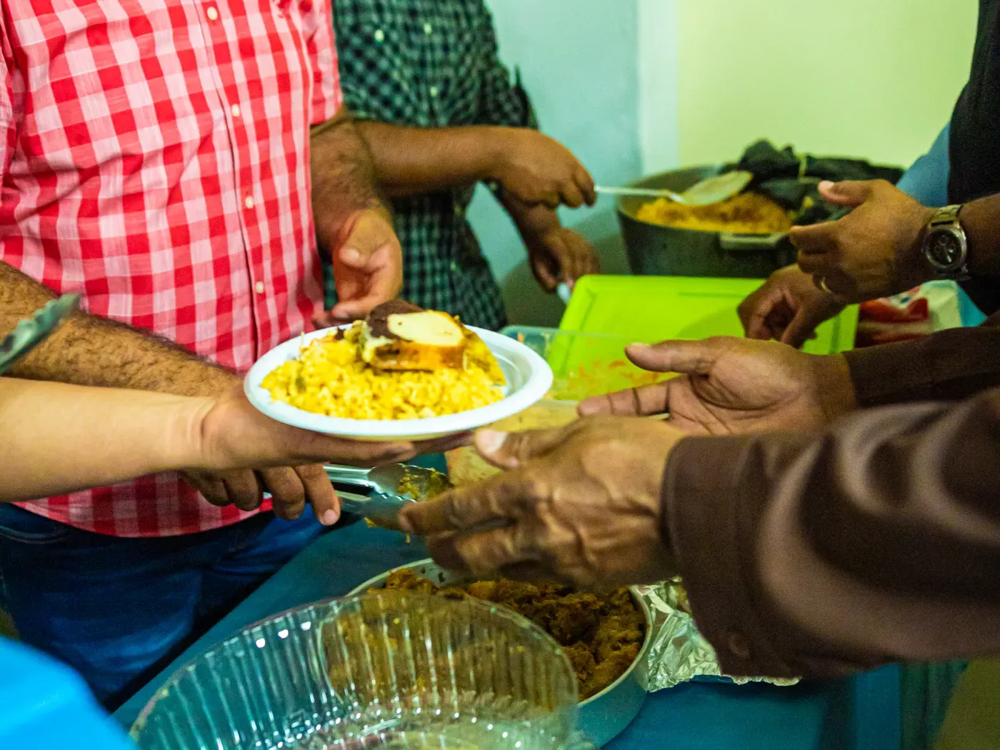
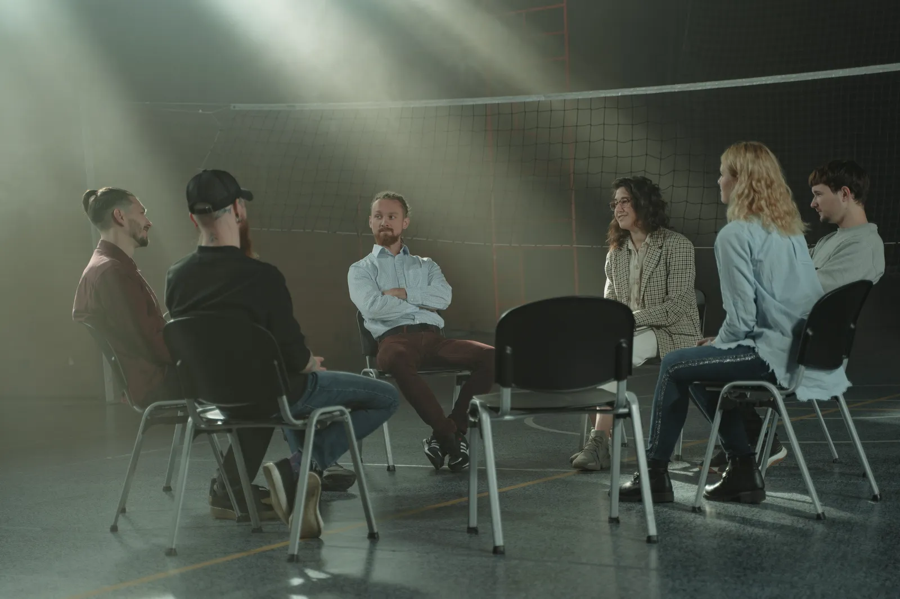
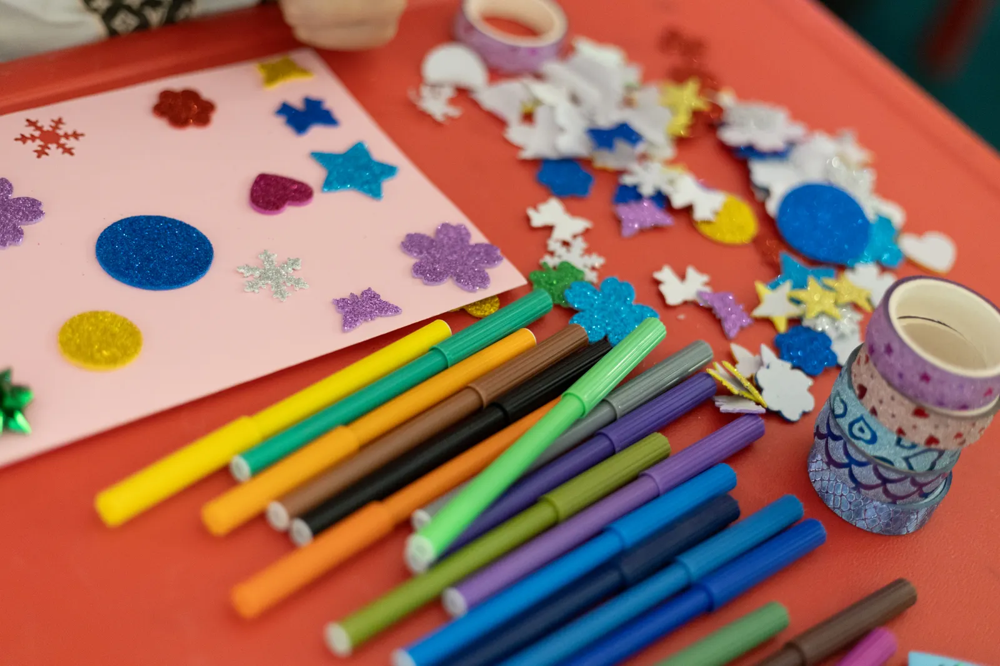

Comedor
Sábados al mediodía, la mesa está servida
Cocinamos entre todos y compartimos el plato. Si querés dar una mano en la cocina o acercar alimentos, escribinos.
Quiero colaborar con el comedorSeminarios bíblicos · Acompañamiento terapéutico · Psicología Social
Los seminarios, los cursos y la carrera de Psicología Social de la iglesia, con acceso propio para cada alumno. Cursás desde tu casa y nos encontramos en las reuniones.
Para empezar
Un seminario de entrada, el primer nivel de Acompañamiento Terapéutico, la carrera de Psicología Social y el curso para la escuelita. Abrí cada uno y mirá el programa completo.
Cómo se cursa
Abrís el programa, mirás los módulos y lo sumás al carrito.
Con Mercado Pago, desde el mismo carrito. Si sumás materiales, van en el mismo resumen.
Cada alumno tiene su acceso al aula, con las clases ordenadas por módulo.
Leés, mirás las clases y le hacés tus consultas al equipo docente dentro del aula.
Catálogo
Buscá por tema o filtrá por área. Los cursos se cursan en el aula online; la Biblia, el cuaderno y los kits se entregan coordinando por WhatsApp.
No encontramos nada con esa búsqueda.
Probá con otra palabra, como «Evangelios» o «cuaderno», o mirá todo el catálogo.
Formación
Qué se estudia en cada área, para quién es, cómo se cursa y quién está a cargo.
Cinco seminarios para leer la Biblia con orden, desde los fundamentos de la fe hasta el liderazgo y el servicio.
Dos niveles para aprender el rol del acompañante: el vínculo, los límites y el trabajo junto a la familia y al equipo tratante.

Se cursa por años. El primero trabaja el grupo, el vínculo y la comunicación, con un grupo operativo en vivo cada semana.
Para las maestras y los maestros de la escuelita: cómo preparar la clase, contar la historia y armar la actividad con los chicos.

Curso + materiales
El curso entra a tu aula y los materiales se entregan coordinando por WhatsApp. El ahorro sale de sumar los precios de hoy.
Reuniones
Alabanza, oración y la Palabra. Si es tu primera vez, avisanos por WhatsApp y te pasamos la dirección.
Avisar que voy a ir
Comedor
Cocinamos entre todos y compartimos el plato. Si querés dar una mano en la cocina o acercar alimentos, escribinos.
Quiero colaborar con el comedorPreguntas frecuentes
No. Los seminarios y cursos están abiertos a quien quiera estudiar. Si no sabés por cuál empezar, escribinos por WhatsApp.
Con el pago confirmado se crea tu usuario y el curso aparece en tu aula, ordenado por módulos.
Sí. El aula funciona en el celular y en la computadora, y retomás la clase donde la dejaste.
Después de la compra coordinamos la entrega de los materiales por WhatsApp.
Los seminarios de nivel inicial no piden conocimientos previos. Cada programa aclara sus requisitos antes de inscribirte.
Emmanuel · Dios con nosotros
Se aplica al instante sobre esta misma demo.